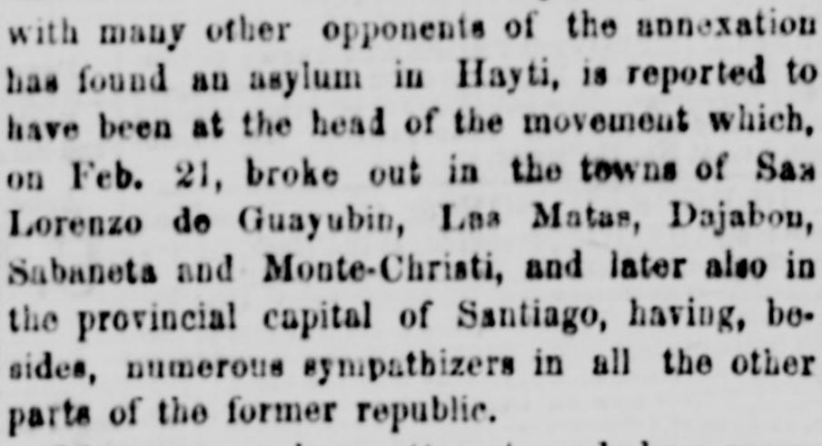
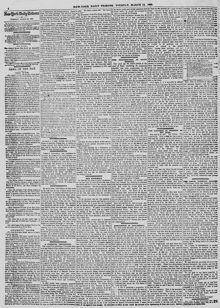

The re. ports of the victories claiied by the Spanish troopsLos informes de las victorias reclamadas por las tropas españolas
New-York Daily Tribune. New-York [N.Y.], March 24, 1863. Page 4. View the originalVer el original


See the full pageVer la página completaThe New-York Daily Tribune reported that an attempted insurrection by the small population of Santo Domingo against Spanish rule was speedily put down, resulting in the population having to succumb to the overwhelming power of Spain. Following this triumph, Spanish officers and the Diario de la Marina accused the Haytian government of instigating the movement, renewing threats against Hayti's independence and prompting the newspaper to warn of European encroachments upon American independence.El New-York Daily Tribune informó que un intento de sublevación de la escasa población de Santo Domingo contra la dominación española fue sofocado rápidamente, debiendo la población sucumbir ante el poderío abrumador de España. Tras este triunfo, oficiales españoles y el Diario de la Marina acusaron al gobierno haitiano de instigar la insurrección, renovando las amenazas contra la independencia de Haití y llevando al periódico a advertir contra los avances europeos sobre la soberanía en el continente americano.
FULL TEXT:TEXTO COMPLETO:
with many other opponents of the annexation has found an asylum in Hayti, is reported to have been at the head of the movement which, on Feb. 21, broke out in the towns of San Lorenzo de Guayubin, Las Matas, Dajabon, Sabaneta and Monte-Christi, and later also in the provincial capital of Santiago, having, besides, numerous sympathizers in all the other parts of the former republic.con muchos otros oponentes de la anexión ha encontrado un asilo en Haití, se reporta haber estado a la cabeza del movimiento que, el 21 de febrero, estalló en los pueblos de San Lorenzo de Guayubín, Las Matas, Dajabón, Sabaneta y Monte-Christi, y más tarde también en la capital provincial de Santiago, teniendo, además, simpatizantes numerosos en todas las demás partes de la antigua república.